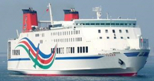

750 PAX 139 TRCK 9,917 GRT RORO Ferry Blt 1994 Jp
/ informed by BNC SHIPBROKING CO., LTD.

- TYPE : RORO CAR PASSENGER FERRY
- BUILT : DEC. 1994, IMABARI SHIPBUILDING CO LTD., JAPAN
- FLAG/CLASS : JAPAN / JG COASTAL TRADING
- LOA/LBP/B/D : 163.57 / 150.00 / 25.60 / 13.21 M
- GRT/draft : 9,917 T / 4.99 M
- MAIN ENGINE : D. UNITED 18PC2-6V, 2 SETS, TOTAL 27,000 PS (19,852 KW)
- SPEED : SEA TRIAL MAX 25.20 KNOTS (NEWBUILDING), SERVICE 22.5 KNOTS
- DECK : 4
- RAMPS : BOW & STERN & INNER RAMPS
- CAR LOADING CAPACITY : 8 T TRUCK X 139 UNITS
- PASSENGER CAPACITY : PASSENGER 750 P
- CREW COMPLEMENT : 25 P
- LOCATION : OSAKA NANKOU AND TOYOKOU, EHIME PREF, SHIKOKU ISLAND, JAPAN
- DELIVERY : NOVEMBER – DECEMBER, 2018 AT JAPAN
Information History
- 180726 : She is available for sale.
- 180228 : She is available for sale.